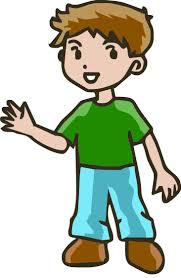

Chaz Snyder
My name is Chaz Snyder. I was born on May 16, 2005 in Aiea, Honolulu and lived here for my whole life. I i. I will be living here until i'm finished with highscool, then i plan on joining the military. currently live in Aiea, Hawaii. As if right now, i am just exploring things that i might be interested in for the future.
What are my hobbies and interests?
I enjoy playing sports a lot as it helps me stay active and it's really fun. Things i like to play are bowling, tennis, and basketball along with some other sports i like to try. I enjoy playing video games with friends aswell, and i like to play tactical shooters or survial and horror games. I enjoy traveling but as a highscool student that's not really something i can do a lot but i would love to do that more in the future.

Video Game Design Project
This game is called "Eternal Moth and Bee". It's a adventure game where you play as a Bee with your Moth friend. The problem is that there's a curse that was released at the begining from two of the bosses fighting. Your objective is to travel throughout the map and fight bosses collecting fragments leading you to the main boss while comepleting side quest to collect more items and relics to become stronger. This teaches survival and some math with the hp and dmg system when battling.
Scratch Project
We made a project using the program "Scratch". I chose to make a slider game. So basically what you're trying to do is catch falling objects that coming from a random point at the top. To make it a bit harder i increased the speed of the falling for it to be more fun. I chose a crab as the catcher on a beach and a puffer fish as what's being caught because it matched. When you catch something, it will respond with a "ding" and also add +1 to your score in the top left. Here is the link to my game: https://scratch.mit.edu/projects/801664415
Contact Information
School Email - 2331101062@k12.hi.us